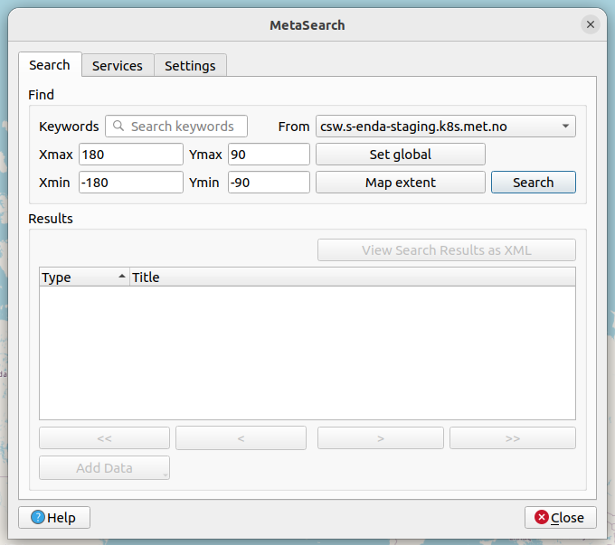

SAR Dataset Accessibility#
%%capture
!python3 -m venv .venv # sets up a virtual environment
!source .venv/bin/activate # Activates said environment
# Installing the required packages to current environment
!pip install -r ../requirements.txt
# The "%%capture" command ensures that the output
# (in this case directories) are not displayed.
There are several ways to find and access the SAR datasets. These are the datasets which contain the calibrated geophysical range Doppler frequency shift retrievals from the ENVISAT ASAR wide-swath acqusitions obtained between 2002 and 2012. In the following a description of some selected methods for finding and extracting these datasets are presented.
Find Data Through Web Search#
All data is set to be freely available and some of it can be found in the MET Norway thredds catalog: https://thredds.met.no/thredds/catalog.html.

The ENVISAT ASAR datasets are located at: https://thredds.met.no/thredds/catalog/remotesensingenvisat/asar-doppler/catalog.html
Or just following this folder structure: Observations/Remotesensing_archive/ENVISAT_ASAR_Doppler:
Entering the subfolder, each individual netCDF-file is found under separate pathways depending on their respective dates. Wanting to access the files for a specific date, the datasets are listed with the following structure: YEAR/MONTH/DAY
Underneath the path to 2012/01/27 is shown:

The entire list of files from the specified date are then accessible (the list goes on).
Access Data#
Upon accessing a specific netCDF-file four different “Access”-options are available. These are “OPENDAP”, “HTTPServer”, “WCS” and “WMS”.

In the following the use of “OPENDAP” is explained closer. This is an easy and efficient way of accessing data. In the examples below the netCDF file “ASA_WSDV2PRNMI20120127_215005_000614583111_00101_51839_0000.nc” (the uppermost file under 2012/01/27) is used as an example.
OPENDAP - Using xarray:#
The data is easily accessed through OPENDAP by the use of the xarray python package. Below is a an example on how to use xarray to open and investigate a desired dataset. This procedure makes it easy to inspect the Dimensions, Coordinates, Data Variables, Indexes and Attributes of the dataset in question.
# Import the required package: xarray
import xarray as xr
''' The backslashes serves as line shifts '''
# Providing the OPENDAP-url
OPENDAP_url = '''https://thredds.met.no/thredds/dodsC\
/remotesensingenvisat/asar-doppler/2012/01/27/\
ASA_WSDV2PRNMI20120127_215005_000612433111_00101\
_51839_0000.nc'''
# Using xarray to open the dataset using the OPENDAP-url
ds = xr.open_dataset(OPENDAP_url)
# Investigating the metadata as an xarray.Dataset
ds
<xarray.Dataset> Size: 45MB
Dimensions: (y: 602, x: 851, zero_doppler_time: 602)
Coordinates:
* zero_doppler_time (zero_doppler_time) datetime64[ns] 5kB 2012-01-...
Dimensions without coordinates: y, x
Data variables: (12/23)
sensor_view_angle (y, x) float32 2MB ...
sigma0 (y, x) float32 2MB ...
subswath_number (y, x) float32 2MB ...
incidence_angle (y, x) float32 2MB ...
sensor_azimuth (y, x) float32 2MB ...
dc (y, x) float32 2MB ...
... ...
geophysical_doppler (y, x) float32 2MB ...
ground_range_current (y, x) float32 2MB ...
std_ground_range_current (y, x) float32 2MB ...
longitude (y, x) float32 2MB ...
latitude (y, x) float32 2MB ...
crs int32 4B ...
Attributes: (12/62)
GDAL: GDAL 3.2.1, released 2020/12/29
acknowledgement: GSAR IDL pre-processing software was develope...
ASAR_WAVELENGTH: 0.05623564240544047
azimuth_start_time: 2012-01-27T21:50:05.173597
contributor_email: jeong-won.park@kopri.re.kr, hjoh@norceresearc...
contributor_institution: Korea Polar Research Institute (KOPRI), NORCE...
... ...
title: ENVISAT ASAR WS Geophysical Doppler shift ret...
title_lang: en
summary_no: Geofysisk Dopplerskift fra ENVISAT ASAR målt ...
title_no: ENVISAT ASAR WS geofysisk Dopplerskift i VV p...
license: http://spdx.org/licenses/CC-BY-4.0 (CC-BY-4.0)
references: https://metno.github.io/MET_SAR-Doppler_User_...How to Find and Visualize Data with WMS (Web Map Service)#
By the Use of data.met.no#
By using data.met.no it is possible to both find and visualise datasets. The web search interface can be accessed from the “Data Catalog” menu item, or directly at https://data.met.no/metsis/search. As seen below the search interface consists of a map and a series of filters.
NB! The fact that the image below showcase a staging site can be ignored. The Data Catalog of https://data.met.no/metsis/search have the same functionalities.

The map provides a pagination of available datasets in the metadata catalog [max/min longitude/latitude rectangle], sorted to showcase the latest additions first. One can also interact with the map to better diplay the results, and to perform data search.
“Select Projection” located just above the map can be altered to change the map projection. “Spatial filter” can be set to both “Within” and “Intersects”.
The “Create bounding box”-button enables to set a bounding box directly on the map and works as a filter on the results.
The “Reset Search”-button clears the filters and starts a new search.
The “Reset Map”-button resets the map.
Map widgets allows direct interaction with the map:
+/-: Zoom in/out.
E: Zooms to the extent of the displayed datasets.
Menu tag: Opens side panel where WMS Layers, Features and Base Layers can be altered.
Magnifying glass: Enables searching for location names.
‘>>’: Showing the location in an overview world map.
Upper right hand widget: Full screen mode
Search filters can also be used to find the desired datasets. The results are updated dynamically when filters are selected. These allows:
A full text search block where the options “Contains all of these words” and “Contains any of these words” are eligible.
Start and end date of the desired datasets.
An option named “Has children” which can be ticked to determine whether datasets are parents with children (i.e. records of the same type).
The desired sorting mechanism (Last metadata update, End date, Start date, Last indexed).
Isotopic categories: The general subjects for which the geospatial data may be relevant, as defined by the ISO standard.
Keywords: Keywords from a controlled vocabulary.
Activity type: The nature of the dataset(s) generation process (Numerical Simulation, Climate Indicator, In Situ Land-based station, Space Borne Instrument).
Project: Datasets related to a certain project.
By clicking the “Reset”-button all filters are removed and a new search can be initiated.
To further visualize the data, simply click on “Child data..” under “Data operations / access:” under one of the parent datasets that correspond to the search criteria (as seen towards the bottom of the image above). In this example there is just this one parent dataset that correspond to the search criteria.
The list of children within this parent dataset are then listed. The bounding boxes for the different datasets also show up on the map. By clicking on a bouding box, the corresponding dataset are also singled out on top of the list below.

Changing the projection of the map might also make it easier to visualise the extent and location of the different boundary boxes:

To visualise the data simply click on the “Visualise” option under “Data operations / access:” on a desired dataset. A close up area in question will then show up. Two clickable image examples are shown below:

To visualise one specific variable of the dataset, e.g. the geophysical doppler, click on the menu tab up towards the top left hand corner. Choose “raster” as the WMS style, and select your desired variable. Below the gephysical doppler is shown for the two examples above. The upper one shows an image from the Gulf Stream, and the lower one shows a part of the Agulhas Current close to the Cape of Good Hope off the coast of South Africa:

NB! Bare in mind that it might tak a bit of time for the visualisation tool to finish the visualization…
By the Use of QGIS#
NB! In the following guide the endpoint “https://csw.s-enda-staging.k8s.met.no” must be exchanged with “https://data.csw.met.no” to be able to find any data.
The MET Norway’s S-ENDA CSW catalog service is also available through QGIS. Desired series/datasets can therefore also be found and inspected as follows:
First open Qgis and select a map, e.g. the OpenStreetMap:

From the menu select “Web > MetaSearch > MetaSearch”.

Select “Services > New” to open the “New Catalog Service”.
For the “Name” type “data.csw.met.no” (not “csw.s-enda-staging.k8s.met.no” as the image suggests). As for the “URl”, type “https://data.csw.met.no” (not “https://csw.s-enda-staging.k8s.met.no” as the image suggests). By then clicking “Ok” the required server is added.
Without exiting “MetaSearch”, move back to the “Search” tab. Now the server that was just added is selected in the “From”-menu (this should now rather be “data.csw.met.no”).

To get a list of the available series/datasets there is the option to add different search parameters under the “Search” tab. Adding keywords will single out the series and datasets with these as part of their “Title”. To find the “calibrated geophysical ENVISAT ASAR wide-swath range frequency shift retrievals” series/datasets the sequence in italics can be provided into the “Keywords” search tab, but “ENVISAT ASAR” or “Doppler” will also suffice. To actually search for datasets klick the “Search” option. The series/datasets will then show up in the “Results” section.

When a search is made, the results can alternatively be displayed as a scrollable list of XMLs. This is easily done by clicking “View Search Results as XML” in the “MetaSearch” window. This will open a new window, namely “XML Request / Response”. Here the resulting series/datasets from the search are displayed as XML.

Moving back to the MetaSearch window the possibility to quickly display the geographical extent of selected series/dataset is available. By klicking one of series/datasets a red bounding box will pop up on the map highligting the geographical extent of said dataset.


To further display the full record information alongside adherent links, double klick the selected series/dataset. A new window named “Record Metadata” will then be opened.

If the exact date and time of the desired dataset is known, this can be also added alongside keywords as “ENVISAT ASAR” or “Doppler” in the MetaSearch. This will single out this specific dataset.

There is also the possibility to alter the bounding box of the desired datasets. This box is altered by altering the latitude and longitude values found within the “Ymax/min” and “Xmax/min” search tabs, respectively. To reset these quickly to global default settings click “Set Global”. Clicking “Map Extent” will limit the bounding box to the extent of the map.

Finally, to visualise one specific variable of the dataset, e.g. the geophysical doppler, start by clicking the “Add Data” option when the desired dataset is selected. Select “Add WMS/WMTS”:

As shown below, choose the desired variable from the “Add Layer(s) from a WM(T)S Server” window that pops up. Click on “Add” in the lower right hand corner to add the layer. The variable will then show up as a layer on the left hand side menu along with the selected map. A visualization of the selected data variable should now be visible on the map.

Find Data Through CSW (Catalog Service on the Web)#
Data can also be found through CSW (Catalog Service on the Web). An efficient and practiacl function to extract data which satisfes certain conditions can be found here metno/esa-coscaw-data-search. An example on how to import the required function from its folder, and how to use it is included below. The SearchCSW funtion takes the following arguments:
time - This is a specific datetime.datetime to set as a starting point. Default is “now” ( time = datetime.datetime.now(timezone(“utc”)) ), i.e. the time at each individual execution of the function.
dt - The time intervall to search within. Depending on what “time” is selected, the search will higlight datasets which spans from (time - dt/2) and up to (time + dt/2). Default is dt = 24.
text - A certain part of the dataset title to be served as a string. Default is text = None.
boundary_box - Just what it sounds like; a geographically bounded box for which the desired datasets only need to intersect. It is structured as follows: [Westernmost Longitude, Southernmost Latitude, Easternmost Longitude, Northernmost Latitude]. Values are in degrees east and degrees north. Default spans the entire globe [-180, -90, 180, 90].
endpoint - The endpoint for which to search through.
NB! There are provided two endpoints below. Before the SAR data is made publicly available at https://data.csw.met.no, the staging site https://csw.s-enda-staging.k8s.met.no is used. The latter is however only accessible to MET Norway employees. Others will have to switch to the publicly available endpoint (https://data.csw.met.no).
from fadg.find_and_collocate import SearchCSW
from datetime import datetime, timedelta
############ Time and dt ############
time_str = '2012-02-15 00:00:00'
''' Valid datetime string for the SearchCSW function.
Default is the time right now; now = datetime.now() '''
time = datetime.strptime(time_str, '%Y-%m-%d %H:%M:%S')
dt = 24 # dt : float (default 24)
# Total time interval in hours before and after the given time
# (dt is centered around the selected time).
print(f'''Finding data within the timespan of:
{time - timedelta(hours=dt/2)} and
{time + timedelta(hours=dt/2)}.''')
print('\n')
############ Text ############
Text = "Doppler"
''' This text string needs to be part of
the title of the files to be found.'''
print(f'Finding data with titles containing "{Text}".')
print('\n')
############ bbox ############
Boundary_Box = [34.9, 80.9, 35.1, 81]
''' This boundary box only have to be intersected by
the geographical extent of the desired datasets.
Default : [-180, -90, 180, 90] '''
print(f'''Finding data intersected by this specified boundary box:
{Boundary_Box}.''')
print('\n')
############ endpoint ############
# Endpoint = "https://data.csw.met.no" # The endpoint to use
# when data is made
# publicly available
Endpoint = "https://csw.s-enda-staging.k8s.met.no" # Endpoint used in the
# original version
# - only accessible
# internally at MET
# Norway
''' The site at which the data is located '''
print(f"Searching for data with endpoint set to: {Endpoint}.")
print('\n')
############ Finding the Corresponding datasets ############
sar = SearchCSW(time = time,
dt = dt,
text = Text,
bbox = Boundary_Box,
endpoint = Endpoint)
############## How many files are found ####################
if len(sar.urls) == 0:
print('No data match the chosen credentials...')
elif len(sar.urls) == 1:
print(f'''
There is {len(sar.urls)} file which match the chosen credentials!''')
else:
print(f'''
There are {len(sar.urls)} files which match the chosen credentials!''')
print('\n')
############### Provide the found URLs ######################
sar.urls.sort() # Sorts the list of files
print('''These are the Opendap-URLs of the datasets
which match the chosen credentials:''')
sar.urls
Finding data within the timespan of:
2012-02-14 12:00:00 and
2012-02-15 12:00:00.
Finding data with titles containing "Doppler".
Finding data intersected by this specified boundary box:
[34.9, 80.9, 35.1, 81].
Searching for data with endpoint set to: https://csw.s-enda-staging.k8s.met.no.
There are 5 files which match the chosen credentials!
These are the Opendap-URLs of the datasets
which match the chosen credentials:
['https://thredds.met.no/thredds/dodsC/remotesensingenvisat/asar-doppler/2012/02/14/ASA_WSDH2PRNMI20120214_103237_000601593111_00353_52091_0000.nc',
'https://thredds.met.no/thredds/dodsC/remotesensingenvisat/asar-doppler/2012/02/14/ASA_WSDH2PRNMI20120214_170908_000623603111_00357_52095_0000.nc',
'https://thredds.met.no/thredds/dodsC/remotesensingenvisat/asar-doppler/2012/02/14/ASA_WSDH2PRNMI20120214_171008_000624093111_00357_52095_0000.nc',
'https://thredds.met.no/thredds/dodsC/remotesensingenvisat/asar-doppler/2012/02/15/ASA_WSDH2PRNMI20120215_095617_000599363111_00367_52105_0000.nc',
'https://thredds.met.no/thredds/dodsC/remotesensingenvisat/asar-doppler/2012/02/15/ASA_WSDH2PRNMI20120215_181312_000610783111_00372_52110_0000.nc']
Get Parent Datasets and their Children (or Dataset Series in ISO 19115) with OGC CSW#
Change identifier when no longer on staging site - 5 ALTERSATIONS REQUIRED!
Change endpoint (in all links) when data is available on data.met.no: https://csw.s-enda-staging.k8s.met.no –> https://data.csw.met.no.
MET Norway organises datasets in parent-child relationships. A parent can be a set of Calibrated geophysical ENVISAT ASAR wide-swath range Doppler frequency shift retrievals, where the hyperlinklink provides the OGC CSW result of a search for “ASAR”.
The same search but with results provided in ISO format: https://csw.s-enda-staging.k8s.met.no/csw?SERVICE=CSW&VERSION=2.0.2&REQUEST=GetRecords&RESULTTYPE=results&TYPENAMES=csw:Record&ElementSetName=full&q=ASAR&outputschema=http://www.isotc211.org/2005/gmd.
Here, a field gmd:parentIdentifier provides the metadata identification of the parent dataset, i.e., no.met.staging:e19b9c36-a9dc-4e13-8827-c998b9045b54. CHANGE HERE
Note: If this document is opened as a PDF, all the links below will be incomplete. To see full links below open the document as a HTML or a jupyter notebook.
Get the parent dataset:
https://csw.s-enda-staging.k8s.met.no/csw?service=CSW&version=2.0.2&request=GetRepositoryItem&id=no.met.staging:e19b9c36-a9dc-4e13-8827-c998b9045b54
CHANGE HERE
Get all its children:
https://csw.s-enda-staging.k8s.met.no/csw?SERVICE=CSW&VERSION=2.0.2&REQUEST=GetRecords&RESULTTYPE=results&TYPENAMES=csw:Record&ElementSetName=full&outputFormat=application%2Fxml&outputschema=http://www.isotc211.org/2005/gmd&CONSTRAINTLANGUAGE=CQL_TEXT&CONSTRAINT=apiso:ParentIdentifier%20like%20%27no.met.staging:e19b9c36-a9dc-4e13-8827-c998b9045b54.
CHANGE HERE
To find all parent datasets:
https://csw.s-enda-staging.k8s.met.no/csw?SERVICE=CSW&VERSION=2.0.2&REQUEST=GetRecords&RESULTTYPE=results&TYPENAMES=csw:Record&ElementSetName=full&outputschema=http://www.isotc211.org/2005/gmd&CONSTRAINTLANGUAGE=CQL_TEXT&CONSTRAINT=dc:type%20like%20%27series%27.
Find Data with OpenSearch#
Need to change the endpoint of all links below: https://csw.s-enda-staging.k8s.met.no… –> https://data.csw.met.no…
OpenSearch is a way for websites and search engines to publish search results in a standard and accessible format.
To find all datasets in the catalogue (Note: To see full links below open the page as a HTML or a jupyter notebook):
https://csw.s-enda-staging.k8s.met.no/?mode=opensearch&service=CSW&version=2.0.2&request=GetRecords&elementsetname=full&typenames=csw:Record&resulttype=results
Or datasets within a given time span (for instance: from 2012-02-01 to 2012-02-05):
https://csw.s-enda-staging.k8s.met.no/?mode=opensearch&service=CSW&version=2.0.2&request=GetRecords&elementsetname=full&typenames=csw:Record&resulttype=results&time=2012-02-01/2012-02-05
Or datasets within a geographical domain (defined as a box with parameters min_longitude, min_latitude, max_longitude, max_latitude - for instance [0, 70, 10, 80]):
https://csw.s-enda-staging.k8s.met.no/?mode=opensearch&service=CSW&version=2.0.2&request=GetRecords&elementsetname=full&typenames=csw:Record&resulttype=results&bbox=0,70,10,80
Or datasets with “ENVISAT ASAR wide-swath range Doppler frequency shift” in the title:
https://csw.s-enda-staging.k8s.met.no/?mode=opensearch&service=CSW&version=2.0.2&request=GetRecords&elementsetname=full&typenames=csw:Record&resulttype=results&q=ENVISAT\\%20ASAR\\%20wide-swath\\%20range\\%20Doppler\\%20frequency\\%20shift
Or datasets with all the three spesifications above:
https://csw.s-enda-staging.k8s.met.no/?mode=opensearch&service=CSW&version=2.0.2&request=GetRecords&elementsetname=full&typenames=csw:Record&resulttype=results&time=2012-01-01/2012-03-01&bbox=0,70,10,80&q=ENVISAT\\%20ASAR\\%20wide-swath\\%20range\\%20Doppler\\%20frequency\\%20shift
More Advanced Geographical Search with OGC CSW#
PyCSW opensearch only supports geographical searches querying for a box. For more advanced geographical searches, one must write specific XML files.
The XML-files listed below are also available in the current notebooks-folder. Also, they are visible in their entirety if document is open as a HTML or as a jupyter notebook.
Here are some examples:
To find all datasets containing a point:
XML-file name: my_xml_request_containing_a_point.xml
Here the coordinates of the point is 59.0 degrees north and 4.0 degrees east.
<?xml version="1.0" encoding="ISO-8859-1" standalone="no"?>
<csw:GetRecords
xmlns:csw="http://www.opengis.net/cat/csw/2.0.2"
xmlns:ogc="http://www.opengis.net/ogc"
xmlns:gml="http://www.opengis.net/gml"
xmlns:xsi="http://www.w3.org/2001/XMLSchema-instance"
service="CSW"
version="2.0.2"
resultType="results"
maxRecords="10"
outputFormat="application/xml"
outputSchema="http://www.opengis.net/cat/csw/2.0.2"
xsi:schemaLocation="http://www.opengis.net/cat/csw/2.0.2 http://schemas.opengis.net/csw/2.0.2/CSW-discovery.xsd" >
<csw:Query typeNames="csw:Record">
<csw:ElementSetName>full</csw:ElementSetName>
<csw:Constraint version="1.1.0">
<ogc:Filter>
<ogc:Contains>
<ogc:PropertyName>ows:BoundingBox</ogc:PropertyName>
<gml:Point>
<gml:pos srsDimension="2">59.0 4.0</gml:pos>
</gml:Point>
</ogc:Contains>
</ogc:Filter>
</csw:Constraint>
</csw:Query>
</csw:GetRecords>
To find all datasets intersecting a polygon:
XML-file name: my_xml_request_intersecting_a_polygon.xml
Here the polygon is [westernmost lon, southernmost lat, easternmost lon, northernmost lat] = [-5.00, -47.00, 20.00, 55.00]. The first and last coupled coordinate is the same to close the polygon.
<?xml version="1.0" encoding="ISO-8859-1" standalone="no"?>
<csw:GetRecords
xmlns:csw="http://www.opengis.net/cat/csw/2.0.2"
xmlns:gml="http://www.opengis.net/gml"
xmlns:ogc="http://www.opengis.net/ogc"
xmlns:xsi="http://www.w3.org/2001/XMLSchema-instance"
service="CSW"
version="2.0.2"
resultType="results"
maxRecords="10"
outputFormat="application/xml"
outputSchema="http://www.opengis.net/cat/csw/2.0.2"
xsi:schemaLocation="http://www.opengis.net/cat/csw/2.0.2 http://schemas.opengis.net/csw/2.0.2/CSW-discovery.xsd" >
<csw:Query typeNames="csw:Record">
<csw:ElementSetName>full</csw:ElementSetName>
<csw:Constraint version="1.1.0">
<ogc:Filter>
<ogc:Intersects>
<ogc:PropertyName>ows:BoundingBox</ogc:PropertyName>
<gml:Polygon>
<gml:exterior>
<gml:LinearRing>
<gml:posList>
47.00 -5.00 55.00 -5.00 55.00 20.00 47.00 20.00 47.00 -5.00
</gml:posList>
</gml:LinearRing>
</gml:exterior>
</gml:Polygon>
</ogc:Intersects>
</ogc:Filter>
</csw:Constraint>
</csw:Query>
</csw:GetRecords>
To find all datasets intersecting a polygon within a given time span:
XML-file name: my_xml_request_intersecting_a_polygon_within_a_given_time_span.xml
Here the polygon is [westernmost lon, southernmost lat, easternmost lon, northernmost lat] = [-10.00, 70.00, 10.00, 80.00]. The first and last coupled coordinate is the same to close the polygon.
Here the start time is 2018-01-01 00:00.
Here the end tim is 2022-01-01 00:00.
<?xml version="1.0" encoding="ISO-8859-1" standalone="no"?>
<csw:GetRecords
xmlns:csw="http://www.opengis.net/cat/csw/2.0.2"
xmlns:gml="http://www.opengis.net/gml"
xmlns:ogc="http://www.opengis.net/ogc"
xmlns:xsi="http://www.w3.org/2001/XMLSchema-instance"
service="CSW"
version="2.0.2"
resultType="results"
maxRecords="100"
outputFormat="application/xml"
outputSchema="http://www.opengis.net/cat/csw/2.0.2"
xsi:schemaLocation="http://www.opengis.net/cat/csw/2.0.2 http://schemas.opengis.net/csw/2.0.2/CSW-discovery.xsd" >
<csw:Query typeNames="csw:Record">
<csw:ElementSetName>summary</csw:ElementSetName>
<csw:Constraint version="1.1.0">
<ogc:Filter>
<ogc:And>
<ogc:Intersects>
<ogc:PropertyName>ows:BoundingBox</ogc:PropertyName>
<gml:Polygon>
<gml:exterior>
<gml:LinearRing>
<gml:posList>
70.00 -10.00 80.00 -10.00 80.00 10.00 70.00 10.00 70.00 -10.00
</gml:posList>
</gml:LinearRing>
</gml:exterior>
</gml:Polygon>
</ogc:Intersects>
<ogc:PropertyIsGreaterThanOrEqualTo>
<ogc:PropertyName>apiso:TempExtent_begin</ogc:PropertyName>
<ogc:Literal>2018-01-01 00:00</ogc:Literal>
</ogc:PropertyIsGreaterThanOrEqualTo>
<ogc:PropertyIsLessThanOrEqualTo>
<ogc:PropertyName>apiso:TempExtent_end</ogc:PropertyName>
<ogc:Literal>2022-01-01 00:00</ogc:Literal>
</ogc:PropertyIsLessThanOrEqualTo>
</ogc:And>
</ogc:Filter>
</csw:Constraint>
</csw:Query>
</csw:GetRecords>
To find all datasets intersecting a polygon within a given time span and with a certain text string:
XML-file name: my_xml_request_intersecting_a_polygon_within_a_given_time_span_and_certain_text_str.xml
Here the polygon is [westernmost lon, southernmost lat, easternmost lon, northernmost lat] = [-10.00, 70.00, 10.00, 80.00]. The first and last coupled coordinate is the same to close the polygon.
Here the start time is 2012-02-01 00:00.
Here the end tim is 2012-02-03 00:00.
The recognizable string is “ENVISAT ASAR”.
<?xml version="1.0" encoding="ISO-8859-1" standalone="no"?>
<csw:GetRecords
xmlns:csw="http://www.opengis.net/cat/csw/2.0.2"
xmlns:gml="http://www.opengis.net/gml"
xmlns:ogc="http://www.opengis.net/ogc"
xmlns:xsi="http://www.w3.org/2001/XMLSchema-instance"
service="CSW"
version="2.0.2"
resultType="results"
maxRecords="100"
outputFormat="application/xml"
outputSchema="http://www.opengis.net/cat/csw/2.0.2"
xsi:schemaLocation="http://www.opengis.net/cat/csw/2.0.2 http://schemas.opengis.net/csw/2.0.2/CSW-discovery.xsd" >
<csw:Query typeNames="csw:Record">
<csw:ElementSetName>summary</csw:ElementSetName>
<csw:Constraint version="1.1.0">
<ogc:Filter>
<ogc:And>
<ogc:Intersects>
<ogc:PropertyName>ows:BoundingBox</ogc:PropertyName>
<gml:Polygon>
<gml:exterior>
<gml:LinearRing>
<gml:posList>
70.00 -10.00 80.00 -10.00 80.00 10.00 70.00 10.00 70.00 -10.00
</gml:posList>
</gml:LinearRing>
</gml:exterior>
</gml:Polygon>
</ogc:Intersects>
<ogc:PropertyIsGreaterThanOrEqualTo>
<ogc:PropertyName>apiso:TempExtent_begin</ogc:PropertyName>
<ogc:Literal>2012-02-01 00:00</ogc:Literal>
</ogc:PropertyIsGreaterThanOrEqualTo>
<ogc:PropertyIsLessThanOrEqualTo>
<ogc:PropertyName>apiso:TempExtent_end</ogc:PropertyName>
<ogc:Literal>2012-02-03 00:00</ogc:Literal>
</ogc:PropertyIsLessThanOrEqualTo>
<ogc:PropertyIsLike wildCard="%" singleChar="_" escapeChar="\\">
<ogc:PropertyName>dc:title</ogc:PropertyName>
<ogc:Literal>%ENVISAT ASAR%</ogc:Literal>
</ogc:PropertyIsLike>
</ogc:And>
</ogc:Filter>
</csw:Constraint>
</csw:Query>
</csw:GetRecords>
Query CSW Endpoint by the Use of Python#
Then, you can query the CSW endpoint and print the response text using, e.g., python (alter endpoint from ‘https://csw.s-enda-staging.k8s.met.no’ to https://data.csw.met.no):
import requests
import xarray as xr
import re
import sys
### Define the headers
headers = {'Content-Type': 'application/xml'}
### Specify the xml-file that should be used for the search
# - As mentioned all the XML-files listed above can be found
# in the notebooks folder.
# my_xml_request = 'my_xml_request_containing_a_point.xml'
# my_xml_request = 'my_xml_request_intersecting_a_polygon.xml'
# my_xml_request = 'my_xml_request_intersecting_a_polygon_within_a_given_time_span.xml'
my_xml_request = 'my_xml_request_intersecting_a_polygon_within_a_given_time_span_and_certain_text_str.xml'
# Open and read the XML file
with open(my_xml_request, 'r') as file:
xml_data = file.read()
### Send the POST request
# response = requests.post('https://data.csw.met.no',
# data=xml_data,
# headers=headers)
response = requests.post('https://csw.s-enda-staging.k8s.met.no',
data=xml_data,
headers=headers)
# The response text
print(response.text)
print('\n')
<?xml version="1.0" encoding="UTF-8" standalone="no"?>
<!-- pycsw 2.7.dev0 -->
<csw:GetRecordsResponse xmlns:csw="http://www.opengis.net/cat/csw/2.0.2" xmlns:dc="http://purl.org/dc/elements/1.1/" xmlns:dct="http://purl.org/dc/terms/" xmlns:gmd="http://www.isotc211.org/2005/gmd" xmlns:gml="http://www.opengis.net/gml" xmlns:ows="http://www.opengis.net/ows" xmlns:xs="http://www.w3.org/2001/XMLSchema" xmlns:xsi="http://www.w3.org/2001/XMLSchema-instance" version="2.0.2" xsi:schemaLocation="http://www.opengis.net/cat/csw/2.0.2 http://schemas.opengis.net/csw/2.0.2/CSW-discovery.xsd"><csw:SearchStatus timestamp="2025-04-10T10:45:18Z"/><csw:SearchResults numberOfRecordsMatched="19" numberOfRecordsReturned="10" nextRecord="11" recordSchema="http://www.opengis.net/cat/csw/2.0.2" elementSet="summary"><csw:SummaryRecord><dc:identifier>no.met.staging:6b6eaf37-882b-44e5-b22a-dedbd6599587</dc:identifier><dc:title>Calibrated geophysical ENVISAT ASAR wide-swath range Doppler frequency shift retrievals in HH polarisation, 2012-02-01T20:04:11.724984+00:00</dc:title><dc:type>dataset</dc:type><dc:subject>RADAR BACKSCATTER</dc:subject><dc:subject>RADAR IMAGERY</dc:subject><dc:subject>RADIAL VELOCITY</dc:subject><dc:subject>Oceanographic geographical features</dc:subject><dc:subject>Weather and climate</dc:subject><dc:subject>sensor_view_angle</dc:subject><dc:subject>surface_backwards_scattering_coefficient_of_radar_wave</dc:subject><dc:subject>angle_of_incidence</dc:subject><dc:subject>sensor_azimuth_angle</dc:subject><dc:subject>surface_height_above_geopotential_datum</dc:subject><dc:subject>wind_speed</dc:subject><dc:subject scheme="http://www.isotc211.org/2005/resources/Codelist/gmxCodelists.xml#MD_TopicCategoryCode">oceans</dc:subject><dc:format>NetCDF-CF</dc:format><dct:references scheme="OPENDAP:OPENDAP">https://thredds.met.no/thredds/dodsC/remotesensingenvisat/asar-doppler/2012/02/01/ASA_WSDH2PRNMI20120201_200411_000624103111_00172_51910_0000.nc</dct:references><dct:references scheme="OGC:WMS">https://fastapi.s-enda-staging.k8s.met.no/api/get_quicklook/2012/02/01/ASA_WSDH2PRNMI20120201_200411_000624103111_00172_51910_0000.nc?service=WMS&version=1.3.0&request=GetCapabilities</dct:references><dct:references scheme="WWW:DOWNLOAD-1.0-http--download">https://thredds.met.no/thredds/fileServer/remotesensingenvisat/asar-doppler/2012/02/01/ASA_WSDH2PRNMI20120201_200411_000624103111_00172_51910_0000.nc</dct:references><dct:modified>2025-01-14</dct:modified><dct:abstract>Calibrated geophysical range Doppler frequency shift retrievals from an ENVISAT ASAR wide-swath acquisition obtained on 2012-02-01T20:04:11.724984+00:00. The geophysical Doppler shift depends on the ocean wave-state and the sea surface current. In the absence of current, the geophysical Doppler shift is mostly related to the local wind speed and direction. The present dataset is in HH polarization.</dct:abstract><ows:BoundingBox crs="urn:x-ogc:def:crs:EPSG:6.11:4326" dimensions="2"><ows:LowerCorner>71.0 6.09</ows:LowerCorner><ows:UpperCorner>75.66 22.33</ows:UpperCorner></ows:BoundingBox></csw:SummaryRecord><csw:SummaryRecord><dc:identifier>no.met.staging:03d6d585-29c9-4086-8841-d40f025419e0</dc:identifier><dc:title>Calibrated geophysical ENVISAT ASAR wide-swath range Doppler frequency shift retrievals in HH polarisation, 2012-02-01T13:29:34.899096+00:00</dc:title><dc:type>dataset</dc:type><dc:subject>RADAR BACKSCATTER</dc:subject><dc:subject>RADAR IMAGERY</dc:subject><dc:subject>RADIAL VELOCITY</dc:subject><dc:subject>Oceanographic geographical features</dc:subject><dc:subject>Weather and climate</dc:subject><dc:subject>sensor_view_angle</dc:subject><dc:subject>surface_backwards_scattering_coefficient_of_radar_wave</dc:subject><dc:subject>angle_of_incidence</dc:subject><dc:subject>sensor_azimuth_angle</dc:subject><dc:subject>surface_height_above_geopotential_datum</dc:subject><dc:subject>wind_speed</dc:subject><dc:subject scheme="http://www.isotc211.org/2005/resources/Codelist/gmxCodelists.xml#MD_TopicCategoryCode">oceans</dc:subject><dc:format>NetCDF-CF</dc:format><dct:references scheme="OPENDAP:OPENDAP">https://thredds.met.no/thredds/dodsC/remotesensingenvisat/asar-doppler/2012/02/01/ASA_WSDH2PRNMI20120201_132934_000616563111_00168_51906_0000.nc</dct:references><dct:references scheme="OGC:WMS">https://fastapi.s-enda-staging.k8s.met.no/api/get_quicklook/2012/02/01/ASA_WSDH2PRNMI20120201_132934_000616563111_00168_51906_0000.nc?service=WMS&version=1.3.0&request=GetCapabilities</dct:references><dct:references scheme="WWW:DOWNLOAD-1.0-http--download">https://thredds.met.no/thredds/fileServer/remotesensingenvisat/asar-doppler/2012/02/01/ASA_WSDH2PRNMI20120201_132934_000616563111_00168_51906_0000.nc</dct:references><dct:modified>2025-01-14</dct:modified><dct:abstract>Calibrated geophysical range Doppler frequency shift retrievals from an ENVISAT ASAR wide-swath acquisition obtained on 2012-02-01T13:29:34.899096+00:00. The geophysical Doppler shift depends on the ocean wave-state and the sea surface current. In the absence of current, the geophysical Doppler shift is mostly related to the local wind speed and direction. The present dataset is in HH polarization.</dct:abstract><ows:BoundingBox crs="urn:x-ogc:def:crs:EPSG:6.11:4326" dimensions="2"><ows:LowerCorner>79.41 -31.61</ows:LowerCorner><ows:UpperCorner>84.52 4.0</ows:UpperCorner></ows:BoundingBox></csw:SummaryRecord><csw:SummaryRecord><dc:identifier>no.met.staging:5d5cf891-af46-492d-9889-62d4039edd38</dc:identifier><dc:title>Calibrated geophysical ENVISAT ASAR wide-swath range Doppler frequency shift retrievals in HH polarisation, 2012-02-01T20:06:39.784087+00:00</dc:title><dc:type>dataset</dc:type><dc:subject>RADAR BACKSCATTER</dc:subject><dc:subject>RADAR IMAGERY</dc:subject><dc:subject>RADIAL VELOCITY</dc:subject><dc:subject>Oceanographic geographical features</dc:subject><dc:subject>Weather and climate</dc:subject><dc:subject>sensor_view_angle</dc:subject><dc:subject>surface_backwards_scattering_coefficient_of_radar_wave</dc:subject><dc:subject>angle_of_incidence</dc:subject><dc:subject>sensor_azimuth_angle</dc:subject><dc:subject>surface_height_above_geopotential_datum</dc:subject><dc:subject>wind_speed</dc:subject><dc:subject scheme="http://www.isotc211.org/2005/resources/Codelist/gmxCodelists.xml#MD_TopicCategoryCode">oceans</dc:subject><dc:format>NetCDF-CF</dc:format><dct:references scheme="OPENDAP:OPENDAP">https://thredds.met.no/thredds/dodsC/remotesensingenvisat/asar-doppler/2012/02/01/ASA_WSDH2PRNMI20120201_200639_000614393111_00172_51910_0000.nc</dct:references><dct:references scheme="OGC:WMS">https://fastapi.s-enda-staging.k8s.met.no/api/get_quicklook/2012/02/01/ASA_WSDH2PRNMI20120201_200639_000614393111_00172_51910_0000.nc?service=WMS&version=1.3.0&request=GetCapabilities</dct:references><dct:references scheme="WWW:DOWNLOAD-1.0-http--download">https://thredds.met.no/thredds/fileServer/remotesensingenvisat/asar-doppler/2012/02/01/ASA_WSDH2PRNMI20120201_200639_000614393111_00172_51910_0000.nc</dct:references><dct:modified>2025-01-14</dct:modified><dct:abstract>Calibrated geophysical range Doppler frequency shift retrievals from an ENVISAT ASAR wide-swath acquisition obtained on 2012-02-01T20:06:39.784087+00:00. The geophysical Doppler shift depends on the ocean wave-state and the sea surface current. In the absence of current, the geophysical Doppler shift is mostly related to the local wind speed and direction. The present dataset is in HH polarization.</dct:abstract><ows:BoundingBox crs="urn:x-ogc:def:crs:EPSG:6.11:4326" dimensions="2"><ows:LowerCorner>78.81 -20.55</ows:LowerCorner><ows:UpperCorner>83.86 12.37</ows:UpperCorner></ows:BoundingBox></csw:SummaryRecord><csw:SummaryRecord><dc:identifier>no.met.staging:0e110d3a-6610-477d-819f-ef97533f1450</dc:identifier><dc:title>Calibrated geophysical ENVISAT ASAR wide-swath range Doppler frequency shift retrievals in HH polarisation, 2012-02-02T11:13:58.985051+00:00</dc:title><dc:type>dataset</dc:type><dc:subject>RADAR BACKSCATTER</dc:subject><dc:subject>RADAR IMAGERY</dc:subject><dc:subject>RADIAL VELOCITY</dc:subject><dc:subject>Oceanographic geographical features</dc:subject><dc:subject>Weather and climate</dc:subject><dc:subject>sensor_view_angle</dc:subject><dc:subject>surface_backwards_scattering_coefficient_of_radar_wave</dc:subject><dc:subject>angle_of_incidence</dc:subject><dc:subject>sensor_azimuth_angle</dc:subject><dc:subject>surface_height_above_geopotential_datum</dc:subject><dc:subject>wind_speed</dc:subject><dc:subject scheme="http://www.isotc211.org/2005/resources/Codelist/gmxCodelists.xml#MD_TopicCategoryCode">oceans</dc:subject><dc:format>NetCDF-CF</dc:format><dct:references scheme="OPENDAP:OPENDAP">https://thredds.met.no/thredds/dodsC/remotesensingenvisat/asar-doppler/2012/02/02/ASA_WSDH2PRNMI20120202_111358_000616673111_00181_51919_0000.nc</dct:references><dct:references scheme="OGC:WMS">https://fastapi.s-enda-staging.k8s.met.no/api/get_quicklook/2012/02/02/ASA_WSDH2PRNMI20120202_111358_000616673111_00181_51919_0000.nc?service=WMS&version=1.3.0&request=GetCapabilities</dct:references><dct:references scheme="WWW:DOWNLOAD-1.0-http--download">https://thredds.met.no/thredds/fileServer/remotesensingenvisat/asar-doppler/2012/02/02/ASA_WSDH2PRNMI20120202_111358_000616673111_00181_51919_0000.nc</dct:references><dct:modified>2025-01-14</dct:modified><dct:abstract>Calibrated geophysical range Doppler frequency shift retrievals from an ENVISAT ASAR wide-swath acquisition obtained on 2012-02-02T11:13:58.985051+00:00. The geophysical Doppler shift depends on the ocean wave-state and the sea surface current. In the absence of current, the geophysical Doppler shift is mostly related to the local wind speed and direction. The present dataset is in HH polarization.</dct:abstract><ows:BoundingBox crs="urn:x-ogc:def:crs:EPSG:6.11:4326" dimensions="2"><ows:LowerCorner>75.25 -5.12</ows:LowerCorner><ows:UpperCorner>80.06 17.42</ows:UpperCorner></ows:BoundingBox></csw:SummaryRecord><csw:SummaryRecord><dc:identifier>no.met.staging:5c89cf75-b770-4072-82e8-9b2d8aab49ca</dc:identifier><dc:title>Calibrated geophysical ENVISAT ASAR wide-swath range Doppler frequency shift retrievals in HH polarisation, 2012-02-02T11:13:18.059767+00:00</dc:title><dc:type>dataset</dc:type><dc:subject>RADAR BACKSCATTER</dc:subject><dc:subject>RADAR IMAGERY</dc:subject><dc:subject>RADIAL VELOCITY</dc:subject><dc:subject>Oceanographic geographical features</dc:subject><dc:subject>Weather and climate</dc:subject><dc:subject>sensor_view_angle</dc:subject><dc:subject>surface_backwards_scattering_coefficient_of_radar_wave</dc:subject><dc:subject>angle_of_incidence</dc:subject><dc:subject>sensor_azimuth_angle</dc:subject><dc:subject>surface_height_above_geopotential_datum</dc:subject><dc:subject>wind_speed</dc:subject><dc:subject scheme="http://www.isotc211.org/2005/resources/Codelist/gmxCodelists.xml#MD_TopicCategoryCode">oceans</dc:subject><dc:format>NetCDF-CF</dc:format><dct:references scheme="OPENDAP:OPENDAP">https://thredds.met.no/thredds/dodsC/remotesensingenvisat/asar-doppler/2012/02/02/ASA_WSDH2PRNMI20120202_111318_000621733111_00181_51919_0000.nc</dct:references><dct:references scheme="OGC:WMS">https://fastapi.s-enda-staging.k8s.met.no/api/get_quicklook/2012/02/02/ASA_WSDH2PRNMI20120202_111318_000621733111_00181_51919_0000.nc?service=WMS&version=1.3.0&request=GetCapabilities</dct:references><dct:references scheme="WWW:DOWNLOAD-1.0-http--download">https://thredds.met.no/thredds/fileServer/remotesensingenvisat/asar-doppler/2012/02/02/ASA_WSDH2PRNMI20120202_111318_000621733111_00181_51919_0000.nc</dct:references><dct:modified>2025-01-14</dct:modified><dct:abstract>Calibrated geophysical range Doppler frequency shift retrievals from an ENVISAT ASAR wide-swath acquisition obtained on 2012-02-02T11:13:18.059767+00:00. The geophysical Doppler shift depends on the ocean wave-state and the sea surface current. In the absence of current, the geophysical Doppler shift is mostly related to the local wind speed and direction. The present dataset is in HH polarization.</dct:abstract><ows:BoundingBox crs="urn:x-ogc:def:crs:EPSG:6.11:4326" dimensions="2"><ows:LowerCorner>77.35 -2.08</ows:LowerCorner><ows:UpperCorner>82.34 25.92</ows:UpperCorner></ows:BoundingBox></csw:SummaryRecord><csw:SummaryRecord><dc:identifier>no.met.staging:610baead-b270-4de9-bc62-9b81aaf761c1</dc:identifier><dc:title>Calibrated geophysical ENVISAT ASAR wide-swath range Doppler frequency shift retrievals in HH polarisation, 2012-02-01T21:43:39.848958+00:00</dc:title><dc:type>dataset</dc:type><dc:subject>RADAR BACKSCATTER</dc:subject><dc:subject>RADAR IMAGERY</dc:subject><dc:subject>RADIAL VELOCITY</dc:subject><dc:subject>Oceanographic geographical features</dc:subject><dc:subject>Weather and climate</dc:subject><dc:subject>sensor_view_angle</dc:subject><dc:subject>surface_backwards_scattering_coefficient_of_radar_wave</dc:subject><dc:subject>angle_of_incidence</dc:subject><dc:subject>sensor_azimuth_angle</dc:subject><dc:subject>surface_height_above_geopotential_datum</dc:subject><dc:subject>wind_speed</dc:subject><dc:subject scheme="http://www.isotc211.org/2005/resources/Codelist/gmxCodelists.xml#MD_TopicCategoryCode">oceans</dc:subject><dc:format>NetCDF-CF</dc:format><dct:references scheme="OPENDAP:OPENDAP">https://thredds.met.no/thredds/dodsC/remotesensingenvisat/asar-doppler/2012/02/01/ASA_WSDH2PRNMI20120201_214339_000602353111_00173_51911_0000.nc</dct:references><dct:references scheme="OGC:WMS">https://fastapi.s-enda-staging.k8s.met.no/api/get_quicklook/2012/02/01/ASA_WSDH2PRNMI20120201_214339_000602353111_00173_51911_0000.nc?service=WMS&version=1.3.0&request=GetCapabilities</dct:references><dct:references scheme="WWW:DOWNLOAD-1.0-http--download">https://thredds.met.no/thredds/fileServer/remotesensingenvisat/asar-doppler/2012/02/01/ASA_WSDH2PRNMI20120201_214339_000602353111_00173_51911_0000.nc</dct:references><dct:modified>2025-01-15</dct:modified><dct:abstract>Calibrated geophysical range Doppler frequency shift retrievals from an ENVISAT ASAR wide-swath acquisition obtained on 2012-02-01T21:43:39.848958+00:00. The geophysical Doppler shift depends on the ocean wave-state and the sea surface current. In the absence of current, the geophysical Doppler shift is mostly related to the local wind speed and direction. The present dataset is in HH polarization.</dct:abstract><ows:BoundingBox crs="urn:x-ogc:def:crs:EPSG:6.11:4326" dimensions="2"><ows:LowerCorner>68.44 -14.83</ows:LowerCorner><ows:UpperCorner>72.89 -1.13</ows:UpperCorner></ows:BoundingBox></csw:SummaryRecord><csw:SummaryRecord><dc:identifier>no.met.staging:2a03342d-006e-4e6c-a654-b9d7183a0ea1</dc:identifier><dc:title>Calibrated geophysical ENVISAT ASAR wide-swath range Doppler frequency shift retrievals in HH polarisation, 2012-02-01T10:11:38.136161+00:00</dc:title><dc:type>dataset</dc:type><dc:subject>RADAR BACKSCATTER</dc:subject><dc:subject>RADAR IMAGERY</dc:subject><dc:subject>RADIAL VELOCITY</dc:subject><dc:subject>Oceanographic geographical features</dc:subject><dc:subject>Weather and climate</dc:subject><dc:subject>sensor_view_angle</dc:subject><dc:subject>surface_backwards_scattering_coefficient_of_radar_wave</dc:subject><dc:subject>angle_of_incidence</dc:subject><dc:subject>sensor_azimuth_angle</dc:subject><dc:subject>surface_height_above_geopotential_datum</dc:subject><dc:subject>wind_speed</dc:subject><dc:subject scheme="http://www.isotc211.org/2005/resources/Codelist/gmxCodelists.xml#MD_TopicCategoryCode">oceans</dc:subject><dc:format>NetCDF-CF</dc:format><dct:references scheme="OPENDAP:OPENDAP">https://thredds.met.no/thredds/dodsC/remotesensingenvisat/asar-doppler/2012/02/01/ASA_WSDH2PRNMI20120201_101138_000615633111_00166_51904_0000.nc</dct:references><dct:references scheme="OGC:WMS">https://fastapi.s-enda-staging.k8s.met.no/api/get_quicklook/2012/02/01/ASA_WSDH2PRNMI20120201_101138_000615633111_00166_51904_0000.nc?service=WMS&version=1.3.0&request=GetCapabilities</dct:references><dct:references scheme="WWW:DOWNLOAD-1.0-http--download">https://thredds.met.no/thredds/fileServer/remotesensingenvisat/asar-doppler/2012/02/01/ASA_WSDH2PRNMI20120201_101138_000615633111_00166_51904_0000.nc</dct:references><dct:modified>2025-01-14</dct:modified><dct:abstract>Calibrated geophysical range Doppler frequency shift retrievals from an ENVISAT ASAR wide-swath acquisition obtained on 2012-02-01T10:11:38.136161+00:00. The geophysical Doppler shift depends on the ocean wave-state and the sea surface current. In the absence of current, the geophysical Doppler shift is mostly related to the local wind speed and direction. The present dataset is in HH polarization.</dct:abstract><ows:BoundingBox crs="urn:x-ogc:def:crs:EPSG:6.11:4326" dimensions="2"><ows:LowerCorner>71.56 7.29</ows:LowerCorner><ows:UpperCorner>76.2 24.07</ows:UpperCorner></ows:BoundingBox></csw:SummaryRecord><csw:SummaryRecord><dc:identifier>no.met.staging:e202b94c-6066-430a-9b41-70242e3b0ee5</dc:identifier><dc:title>Calibrated geophysical ENVISAT ASAR wide-swath range Doppler frequency shift retrievals in HH polarisation, 2012-02-02T11:12:46.321710+00:00</dc:title><dc:type>dataset</dc:type><dc:subject>RADAR BACKSCATTER</dc:subject><dc:subject>RADAR IMAGERY</dc:subject><dc:subject>RADIAL VELOCITY</dc:subject><dc:subject>Oceanographic geographical features</dc:subject><dc:subject>Weather and climate</dc:subject><dc:subject>sensor_view_angle</dc:subject><dc:subject>surface_backwards_scattering_coefficient_of_radar_wave</dc:subject><dc:subject>angle_of_incidence</dc:subject><dc:subject>sensor_azimuth_angle</dc:subject><dc:subject>surface_height_above_geopotential_datum</dc:subject><dc:subject>wind_speed</dc:subject><dc:subject scheme="http://www.isotc211.org/2005/resources/Codelist/gmxCodelists.xml#MD_TopicCategoryCode">oceans</dc:subject><dc:format>NetCDF-CF</dc:format><dct:references scheme="OPENDAP:OPENDAP">https://thredds.met.no/thredds/dodsC/remotesensingenvisat/asar-doppler/2012/02/02/ASA_WSDH2PRNMI20120202_111246_000600373111_00181_51919_0000.nc</dct:references><dct:references scheme="OGC:WMS">https://fastapi.s-enda-staging.k8s.met.no/api/get_quicklook/2012/02/02/ASA_WSDH2PRNMI20120202_111246_000600373111_00181_51919_0000.nc?service=WMS&version=1.3.0&request=GetCapabilities</dct:references><dct:references scheme="WWW:DOWNLOAD-1.0-http--download">https://thredds.met.no/thredds/fileServer/remotesensingenvisat/asar-doppler/2012/02/02/ASA_WSDH2PRNMI20120202_111246_000600373111_00181_51919_0000.nc</dct:references><dct:modified>2025-01-14</dct:modified><dct:abstract>Calibrated geophysical range Doppler frequency shift retrievals from an ENVISAT ASAR wide-swath acquisition obtained on 2012-02-02T11:12:46.321710+00:00. The geophysical Doppler shift depends on the ocean wave-state and the sea surface current. In the absence of current, the geophysical Doppler shift is mostly related to the local wind speed and direction. The present dataset is in HH polarization.</dct:abstract><ows:BoundingBox crs="urn:x-ogc:def:crs:EPSG:6.11:4326" dimensions="2"><ows:LowerCorner>79.01 1.5</ows:LowerCorner><ows:UpperCorner>84.0 34.8</ows:UpperCorner></ows:BoundingBox></csw:SummaryRecord><csw:SummaryRecord><dc:identifier>no.met.staging:4fcf6ffb-0713-48e9-b7c1-d7e9752c7ef8</dc:identifier><dc:title>Calibrated geophysical ENVISAT ASAR wide-swath range Doppler frequency shift retrievals in HH polarisation, 2012-02-01T11:50:02.979539+00:00</dc:title><dc:type>dataset</dc:type><dc:subject>RADAR BACKSCATTER</dc:subject><dc:subject>RADAR IMAGERY</dc:subject><dc:subject>RADIAL VELOCITY</dc:subject><dc:subject>Oceanographic geographical features</dc:subject><dc:subject>Weather and climate</dc:subject><dc:subject>sensor_view_angle</dc:subject><dc:subject>surface_backwards_scattering_coefficient_of_radar_wave</dc:subject><dc:subject>angle_of_incidence</dc:subject><dc:subject>sensor_azimuth_angle</dc:subject><dc:subject>surface_height_above_geopotential_datum</dc:subject><dc:subject>wind_speed</dc:subject><dc:subject scheme="http://www.isotc211.org/2005/resources/Codelist/gmxCodelists.xml#MD_TopicCategoryCode">oceans</dc:subject><dc:format>NetCDF-CF</dc:format><dct:references scheme="OPENDAP:OPENDAP">https://thredds.met.no/thredds/dodsC/remotesensingenvisat/asar-doppler/2012/02/01/ASA_WSDH2PRNMI20120201_115002_000623733111_00167_51905_0000.nc</dct:references><dct:references scheme="OGC:WMS">https://fastapi.s-enda-staging.k8s.met.no/api/get_quicklook/2012/02/01/ASA_WSDH2PRNMI20120201_115002_000623733111_00167_51905_0000.nc?service=WMS&version=1.3.0&request=GetCapabilities</dct:references><dct:references scheme="WWW:DOWNLOAD-1.0-http--download">https://thredds.met.no/thredds/fileServer/remotesensingenvisat/asar-doppler/2012/02/01/ASA_WSDH2PRNMI20120201_115002_000623733111_00167_51905_0000.nc</dct:references><dct:modified>2025-01-14</dct:modified><dct:abstract>Calibrated geophysical range Doppler frequency shift retrievals from an ENVISAT ASAR wide-swath acquisition obtained on 2012-02-01T11:50:02.979539+00:00. The geophysical Doppler shift depends on the ocean wave-state and the sea surface current. In the absence of current, the geophysical Doppler shift is mostly related to the local wind speed and direction. The present dataset is in HH polarization.</dct:abstract><ows:BoundingBox crs="urn:x-ogc:def:crs:EPSG:6.11:4326" dimensions="2"><ows:LowerCorner>77.32 0.07</ows:LowerCorner><ows:UpperCorner>81.04 16.7</ows:UpperCorner></ows:BoundingBox></csw:SummaryRecord><csw:SummaryRecord><dc:identifier>no.met.staging:b86b0276-3186-4c8f-b1e0-10d77aa82dfd</dc:identifier><dc:title>Calibrated geophysical ENVISAT ASAR wide-swath range Doppler frequency shift retrievals in HH polarisation, 2012-02-01T21:45:25.813454+00:00</dc:title><dc:type>dataset</dc:type><dc:subject>RADAR BACKSCATTER</dc:subject><dc:subject>RADAR IMAGERY</dc:subject><dc:subject>RADIAL VELOCITY</dc:subject><dc:subject>Oceanographic geographical features</dc:subject><dc:subject>Weather and climate</dc:subject><dc:subject>sensor_view_angle</dc:subject><dc:subject>surface_backwards_scattering_coefficient_of_radar_wave</dc:subject><dc:subject>angle_of_incidence</dc:subject><dc:subject>sensor_azimuth_angle</dc:subject><dc:subject>surface_height_above_geopotential_datum</dc:subject><dc:subject>wind_speed</dc:subject><dc:subject scheme="http://www.isotc211.org/2005/resources/Codelist/gmxCodelists.xml#MD_TopicCategoryCode">oceans</dc:subject><dc:format>NetCDF-CF</dc:format><dct:references scheme="OPENDAP:OPENDAP">https://thredds.met.no/thredds/dodsC/remotesensingenvisat/asar-doppler/2012/02/01/ASA_WSDH2PRNMI20120201_214525_000623603111_00173_51911_0000.nc</dct:references><dct:references scheme="OGC:WMS">https://fastapi.s-enda-staging.k8s.met.no/api/get_quicklook/2012/02/01/ASA_WSDH2PRNMI20120201_214525_000623603111_00173_51911_0000.nc?service=WMS&version=1.3.0&request=GetCapabilities</dct:references><dct:references scheme="WWW:DOWNLOAD-1.0-http--download">https://thredds.met.no/thredds/fileServer/remotesensingenvisat/asar-doppler/2012/02/01/ASA_WSDH2PRNMI20120201_214525_000623603111_00173_51911_0000.nc</dct:references><dct:modified>2025-01-14</dct:modified><dct:abstract>Calibrated geophysical range Doppler frequency shift retrievals from an ENVISAT ASAR wide-swath acquisition obtained on 2012-02-01T21:45:25.813454+00:00. The geophysical Doppler shift depends on the ocean wave-state and the sea surface current. In the absence of current, the geophysical Doppler shift is mostly related to the local wind speed and direction. The present dataset is in HH polarization.</dct:abstract><ows:BoundingBox crs="urn:x-ogc:def:crs:EPSG:6.11:4326" dimensions="2"><ows:LowerCorner>74.3 -26.36</ows:LowerCorner><ows:UpperCorner>79.1 -5.54</ows:UpperCorner></ows:BoundingBox></csw:SummaryRecord></csw:SearchResults></csw:GetRecordsResponse>
Extract the OPENDAP urls#
Having recieved the response text, it is possible to extract the OPENDAP-urls. This can be read from the response text, but can also be easily extracted using the code snippet below:
''' The pattern 'https.*?\.nc(?:ml)?' is
"https://thredds.met.no/thredds/dodsC/{regardless_of_what_is_in_between}.ncml"
where the "ml" ending is inculded only if found. '''
### Opendap url format
my_pattern= r'https://thredds.met.no/thredds/dodsC/.*?\.nc(?:ml)?'
### findall() function returns all non-overlapping matches of
# my_pattern in string, as a list of strings
opendap_urls = re.findall(my_pattern, response.text)
# Sort the list of OPENDAP-urls by date and time
opendap_urls.sort()
# List of OPENDAP urls
print(f'List contains {len(opendap_urls)} urls:')
for url in opendap_urls:
print(url)
# Check if there are any files - Statement if not
if len(opendap_urls) > 0:
# Open the first dataset in the list of urls
print('\n')
print("Opening the first dataset with xarray:")
ds = xr.open_dataset(opendap_urls[0])
else:
ds = "No file(s) match the search criterias."
ds
List contains 10 urls:
https://thredds.met.no/thredds/dodsC/remotesensingenvisat/asar-doppler/2012/02/01/ASA_WSDH2PRNMI20120201_101138_000615633111_00166_51904_0000.nc
https://thredds.met.no/thredds/dodsC/remotesensingenvisat/asar-doppler/2012/02/01/ASA_WSDH2PRNMI20120201_115002_000623733111_00167_51905_0000.nc
https://thredds.met.no/thredds/dodsC/remotesensingenvisat/asar-doppler/2012/02/01/ASA_WSDH2PRNMI20120201_132934_000616563111_00168_51906_0000.nc
https://thredds.met.no/thredds/dodsC/remotesensingenvisat/asar-doppler/2012/02/01/ASA_WSDH2PRNMI20120201_200411_000624103111_00172_51910_0000.nc
https://thredds.met.no/thredds/dodsC/remotesensingenvisat/asar-doppler/2012/02/01/ASA_WSDH2PRNMI20120201_200639_000614393111_00172_51910_0000.nc
https://thredds.met.no/thredds/dodsC/remotesensingenvisat/asar-doppler/2012/02/01/ASA_WSDH2PRNMI20120201_214339_000602353111_00173_51911_0000.nc
https://thredds.met.no/thredds/dodsC/remotesensingenvisat/asar-doppler/2012/02/01/ASA_WSDH2PRNMI20120201_214525_000623603111_00173_51911_0000.nc
https://thredds.met.no/thredds/dodsC/remotesensingenvisat/asar-doppler/2012/02/02/ASA_WSDH2PRNMI20120202_111246_000600373111_00181_51919_0000.nc
https://thredds.met.no/thredds/dodsC/remotesensingenvisat/asar-doppler/2012/02/02/ASA_WSDH2PRNMI20120202_111318_000621733111_00181_51919_0000.nc
https://thredds.met.no/thredds/dodsC/remotesensingenvisat/asar-doppler/2012/02/02/ASA_WSDH2PRNMI20120202_111358_000616673111_00181_51919_0000.nc
Opening the first dataset with xarray:
<xarray.Dataset> Size: 45MB
Dimensions: (y: 605, x: 852, zero_doppler_time: 605)
Coordinates:
* zero_doppler_time (zero_doppler_time) datetime64[ns] 5kB 2012-02-...
Dimensions without coordinates: y, x
Data variables: (12/23)
sensor_view_angle (y, x) float32 2MB ...
sigma0 (y, x) float32 2MB ...
subswath_number (y, x) float32 2MB ...
incidence_angle (y, x) float32 2MB ...
sensor_azimuth (y, x) float32 2MB ...
dc (y, x) float32 2MB ...
... ...
geophysical_doppler (y, x) float32 2MB ...
ground_range_current (y, x) float32 2MB ...
std_ground_range_current (y, x) float32 2MB ...
longitude (y, x) float32 2MB ...
latitude (y, x) float32 2MB ...
crs int32 4B ...
Attributes: (12/62)
GDAL: GDAL 3.2.1, released 2020/12/29
acknowledgement: GSAR IDL pre-processing software was develope...
ASAR_WAVELENGTH: 0.05623564240544047
azimuth_start_time: 2012-02-01T10:11:38.171153
contributor_email: jeong-won.park@kopri.re.kr, hjoh@norceresearc...
contributor_institution: Korea Polar Research Institute (KOPRI), NORCE...
... ...
title: ENVISAT ASAR WS Geophysical Doppler shift ret...
title_lang: en
summary_no: Geofysisk Dopplerskift fra ENVISAT ASAR målt ...
title_no: ENVISAT ASAR WS geofysisk Dopplerskift i HH p...
license: http://spdx.org/licenses/CC-BY-4.0 (CC-BY-4.0)
references: https://metno.github.io/MET_SAR-Doppler_User_...NOTE: There seems to be a server-side limit on the number of records returned in a single response, regardless of the “maxRecords” value in the resquest. It’s not uncommon for servers to have such limits to prevent excessively large responses. Here this limit appears to be 10 records for every request.
To retrieve the rest of the records, you can make use of the startPosition attribute. By setting startPosition=”11”, you can retrieve the next set of records starting from the 11th record.
Here’s how you would add it to one of the XML files listed above:
<?xml version="1.0" encoding="ISO-8859-1" standalone="no"?>
<csw:GetRecords
xmlns:csw="http://www.opengis.net/cat/csw/2.0.2"
xmlns:gml="http://www.opengis.net/gml"
xmlns:ogc="http://www.opengis.net/ogc"
xmlns:xsi="http://www.w3.org/2001/XMLSchema-instance"
service="CSW"
version="2.0.2"
resultType="results"
maxRecords="100"
startPosition="11"
outputFormat="application/xml"
outputSchema="http://www.opengis.net/cat/csw/2.0.2"
xsi:schemaLocation="http://www.opengis.net/cat/csw/2.0.2 http://schemas.opengis.net/csw/2.0.2/CSW-discovery.xsd" >
<!-- rest of the XML file -->
</csw:GetRecords>
This way, you can “paginate” through the records by making multiple requests and incrementing startPosition each time.
Query CSW Endpoint by the Use an HTTP POST (From the Terminal)#
Alternatively, one can also use an HTTP POST request to query to the PyCSW server directly from the terminal. The steps are as follows:
Make sure that you have one of the listed XML-files above saved, or one that you have composed for your search.
Then, use curl (a command-line tool for making HTTP requests) to send a POST request to the PyCSW server. An example might look like (alter endpoint from ‘https://csw.s-enda-staging.k8s.met.no’ to https://data.csw.met.no):
### The original bash commands:
'''
%%bash
# curl -X POST -H "Content-Type: application/xml" -d \
# @my_xml_request_intersecting_a_polygon_within_a_given_time_span_and_certain_text_str.xml \
# https://data.csw.met.no
'''
'''
curl -X POST -H "Content-Type: application/xml" -d \
@my_xml_request_intersecting_a_polygon_within_a_given_time_span_and_certain_text_str.xml \
https://csw.s-enda-staging.k8s.met.no
'''
### Using subprocess just to make the output readable when opened as a HTML or PDF:
import subprocess
# Define the curl command
curl_command = [
"curl", "-X", "POST", "-H", "Content-Type: application/xml", "-d",
"@my_xml_request_intersecting_a_polygon_within_a_given_time_span_and_certain_text_str.xml",
"https://csw.s-enda-staging.k8s.met.no"
]
# Run the curl command and capture the output
result = subprocess.run(curl_command, capture_output=True, text=True)
# Print the output
print("Standard Output:\n")
print(result.stdout)
print("\nStandard Error:\n")
print(result.stderr)
Standard Output:
<?xml version="1.0" encoding="UTF-8" standalone="no"?>
<!-- pycsw 2.7.dev0 -->
<csw:GetRecordsResponse xmlns:csw="http://www.opengis.net/cat/csw/2.0.2" xmlns:dc="http://purl.org/dc/elements/1.1/" xmlns:dct="http://purl.org/dc/terms/" xmlns:gmd="http://www.isotc211.org/2005/gmd" xmlns:gml="http://www.opengis.net/gml" xmlns:ows="http://www.opengis.net/ows" xmlns:xs="http://www.w3.org/2001/XMLSchema" xmlns:xsi="http://www.w3.org/2001/XMLSchema-instance" version="2.0.2" xsi:schemaLocation="http://www.opengis.net/cat/csw/2.0.2 http://schemas.opengis.net/csw/2.0.2/CSW-discovery.xsd"><csw:SearchStatus timestamp="2025-04-10T10:45:19Z"/><csw:SearchResults numberOfRecordsMatched="19" numberOfRecordsReturned="10" nextRecord="11" recordSchema="http://www.opengis.net/cat/csw/2.0.2" elementSet="summary"><csw:SummaryRecord><dc:identifier>no.met.staging:6b6eaf37-882b-44e5-b22a-dedbd6599587</dc:identifier><dc:title>Calibrated geophysical ENVISAT ASAR wide-swath range Doppler frequency shift retrievals in HH polarisation, 2012-02-01T20:04:11.724984+00:00</dc:title><dc:type>dataset</dc:type><dc:subject>RADAR BACKSCATTER</dc:subject><dc:subject>RADAR IMAGERY</dc:subject><dc:subject>RADIAL VELOCITY</dc:subject><dc:subject>Oceanographic geographical features</dc:subject><dc:subject>Weather and climate</dc:subject><dc:subject>sensor_view_angle</dc:subject><dc:subject>surface_backwards_scattering_coefficient_of_radar_wave</dc:subject><dc:subject>angle_of_incidence</dc:subject><dc:subject>sensor_azimuth_angle</dc:subject><dc:subject>surface_height_above_geopotential_datum</dc:subject><dc:subject>wind_speed</dc:subject><dc:subject scheme="http://www.isotc211.org/2005/resources/Codelist/gmxCodelists.xml#MD_TopicCategoryCode">oceans</dc:subject><dc:format>NetCDF-CF</dc:format><dct:references scheme="OPENDAP:OPENDAP">https://thredds.met.no/thredds/dodsC/remotesensingenvisat/asar-doppler/2012/02/01/ASA_WSDH2PRNMI20120201_200411_000624103111_00172_51910_0000.nc</dct:references><dct:references scheme="OGC:WMS">https://fastapi.s-enda-staging.k8s.met.no/api/get_quicklook/2012/02/01/ASA_WSDH2PRNMI20120201_200411_000624103111_00172_51910_0000.nc?service=WMS&version=1.3.0&request=GetCapabilities</dct:references><dct:references scheme="WWW:DOWNLOAD-1.0-http--download">https://thredds.met.no/thredds/fileServer/remotesensingenvisat/asar-doppler/2012/02/01/ASA_WSDH2PRNMI20120201_200411_000624103111_00172_51910_0000.nc</dct:references><dct:modified>2025-01-14</dct:modified><dct:abstract>Calibrated geophysical range Doppler frequency shift retrievals from an ENVISAT ASAR wide-swath acquisition obtained on 2012-02-01T20:04:11.724984+00:00. The geophysical Doppler shift depends on the ocean wave-state and the sea surface current. In the absence of current, the geophysical Doppler shift is mostly related to the local wind speed and direction. The present dataset is in HH polarization.</dct:abstract><ows:BoundingBox crs="urn:x-ogc:def:crs:EPSG:6.11:4326" dimensions="2"><ows:LowerCorner>71.0 6.09</ows:LowerCorner><ows:UpperCorner>75.66 22.33</ows:UpperCorner></ows:BoundingBox></csw:SummaryRecord><csw:SummaryRecord><dc:identifier>no.met.staging:03d6d585-29c9-4086-8841-d40f025419e0</dc:identifier><dc:title>Calibrated geophysical ENVISAT ASAR wide-swath range Doppler frequency shift retrievals in HH polarisation, 2012-02-01T13:29:34.899096+00:00</dc:title><dc:type>dataset</dc:type><dc:subject>RADAR BACKSCATTER</dc:subject><dc:subject>RADAR IMAGERY</dc:subject><dc:subject>RADIAL VELOCITY</dc:subject><dc:subject>Oceanographic geographical features</dc:subject><dc:subject>Weather and climate</dc:subject><dc:subject>sensor_view_angle</dc:subject><dc:subject>surface_backwards_scattering_coefficient_of_radar_wave</dc:subject><dc:subject>angle_of_incidence</dc:subject><dc:subject>sensor_azimuth_angle</dc:subject><dc:subject>surface_height_above_geopotential_datum</dc:subject><dc:subject>wind_speed</dc:subject><dc:subject scheme="http://www.isotc211.org/2005/resources/Codelist/gmxCodelists.xml#MD_TopicCategoryCode">oceans</dc:subject><dc:format>NetCDF-CF</dc:format><dct:references scheme="OPENDAP:OPENDAP">https://thredds.met.no/thredds/dodsC/remotesensingenvisat/asar-doppler/2012/02/01/ASA_WSDH2PRNMI20120201_132934_000616563111_00168_51906_0000.nc</dct:references><dct:references scheme="OGC:WMS">https://fastapi.s-enda-staging.k8s.met.no/api/get_quicklook/2012/02/01/ASA_WSDH2PRNMI20120201_132934_000616563111_00168_51906_0000.nc?service=WMS&version=1.3.0&request=GetCapabilities</dct:references><dct:references scheme="WWW:DOWNLOAD-1.0-http--download">https://thredds.met.no/thredds/fileServer/remotesensingenvisat/asar-doppler/2012/02/01/ASA_WSDH2PRNMI20120201_132934_000616563111_00168_51906_0000.nc</dct:references><dct:modified>2025-01-14</dct:modified><dct:abstract>Calibrated geophysical range Doppler frequency shift retrievals from an ENVISAT ASAR wide-swath acquisition obtained on 2012-02-01T13:29:34.899096+00:00. The geophysical Doppler shift depends on the ocean wave-state and the sea surface current. In the absence of current, the geophysical Doppler shift is mostly related to the local wind speed and direction. The present dataset is in HH polarization.</dct:abstract><ows:BoundingBox crs="urn:x-ogc:def:crs:EPSG:6.11:4326" dimensions="2"><ows:LowerCorner>79.41 -31.61</ows:LowerCorner><ows:UpperCorner>84.52 4.0</ows:UpperCorner></ows:BoundingBox></csw:SummaryRecord><csw:SummaryRecord><dc:identifier>no.met.staging:5d5cf891-af46-492d-9889-62d4039edd38</dc:identifier><dc:title>Calibrated geophysical ENVISAT ASAR wide-swath range Doppler frequency shift retrievals in HH polarisation, 2012-02-01T20:06:39.784087+00:00</dc:title><dc:type>dataset</dc:type><dc:subject>RADAR BACKSCATTER</dc:subject><dc:subject>RADAR IMAGERY</dc:subject><dc:subject>RADIAL VELOCITY</dc:subject><dc:subject>Oceanographic geographical features</dc:subject><dc:subject>Weather and climate</dc:subject><dc:subject>sensor_view_angle</dc:subject><dc:subject>surface_backwards_scattering_coefficient_of_radar_wave</dc:subject><dc:subject>angle_of_incidence</dc:subject><dc:subject>sensor_azimuth_angle</dc:subject><dc:subject>surface_height_above_geopotential_datum</dc:subject><dc:subject>wind_speed</dc:subject><dc:subject scheme="http://www.isotc211.org/2005/resources/Codelist/gmxCodelists.xml#MD_TopicCategoryCode">oceans</dc:subject><dc:format>NetCDF-CF</dc:format><dct:references scheme="OPENDAP:OPENDAP">https://thredds.met.no/thredds/dodsC/remotesensingenvisat/asar-doppler/2012/02/01/ASA_WSDH2PRNMI20120201_200639_000614393111_00172_51910_0000.nc</dct:references><dct:references scheme="OGC:WMS">https://fastapi.s-enda-staging.k8s.met.no/api/get_quicklook/2012/02/01/ASA_WSDH2PRNMI20120201_200639_000614393111_00172_51910_0000.nc?service=WMS&version=1.3.0&request=GetCapabilities</dct:references><dct:references scheme="WWW:DOWNLOAD-1.0-http--download">https://thredds.met.no/thredds/fileServer/remotesensingenvisat/asar-doppler/2012/02/01/ASA_WSDH2PRNMI20120201_200639_000614393111_00172_51910_0000.nc</dct:references><dct:modified>2025-01-14</dct:modified><dct:abstract>Calibrated geophysical range Doppler frequency shift retrievals from an ENVISAT ASAR wide-swath acquisition obtained on 2012-02-01T20:06:39.784087+00:00. The geophysical Doppler shift depends on the ocean wave-state and the sea surface current. In the absence of current, the geophysical Doppler shift is mostly related to the local wind speed and direction. The present dataset is in HH polarization.</dct:abstract><ows:BoundingBox crs="urn:x-ogc:def:crs:EPSG:6.11:4326" dimensions="2"><ows:LowerCorner>78.81 -20.55</ows:LowerCorner><ows:UpperCorner>83.86 12.37</ows:UpperCorner></ows:BoundingBox></csw:SummaryRecord><csw:SummaryRecord><dc:identifier>no.met.staging:0e110d3a-6610-477d-819f-ef97533f1450</dc:identifier><dc:title>Calibrated geophysical ENVISAT ASAR wide-swath range Doppler frequency shift retrievals in HH polarisation, 2012-02-02T11:13:58.985051+00:00</dc:title><dc:type>dataset</dc:type><dc:subject>RADAR BACKSCATTER</dc:subject><dc:subject>RADAR IMAGERY</dc:subject><dc:subject>RADIAL VELOCITY</dc:subject><dc:subject>Oceanographic geographical features</dc:subject><dc:subject>Weather and climate</dc:subject><dc:subject>sensor_view_angle</dc:subject><dc:subject>surface_backwards_scattering_coefficient_of_radar_wave</dc:subject><dc:subject>angle_of_incidence</dc:subject><dc:subject>sensor_azimuth_angle</dc:subject><dc:subject>surface_height_above_geopotential_datum</dc:subject><dc:subject>wind_speed</dc:subject><dc:subject scheme="http://www.isotc211.org/2005/resources/Codelist/gmxCodelists.xml#MD_TopicCategoryCode">oceans</dc:subject><dc:format>NetCDF-CF</dc:format><dct:references scheme="OPENDAP:OPENDAP">https://thredds.met.no/thredds/dodsC/remotesensingenvisat/asar-doppler/2012/02/02/ASA_WSDH2PRNMI20120202_111358_000616673111_00181_51919_0000.nc</dct:references><dct:references scheme="OGC:WMS">https://fastapi.s-enda-staging.k8s.met.no/api/get_quicklook/2012/02/02/ASA_WSDH2PRNMI20120202_111358_000616673111_00181_51919_0000.nc?service=WMS&version=1.3.0&request=GetCapabilities</dct:references><dct:references scheme="WWW:DOWNLOAD-1.0-http--download">https://thredds.met.no/thredds/fileServer/remotesensingenvisat/asar-doppler/2012/02/02/ASA_WSDH2PRNMI20120202_111358_000616673111_00181_51919_0000.nc</dct:references><dct:modified>2025-01-14</dct:modified><dct:abstract>Calibrated geophysical range Doppler frequency shift retrievals from an ENVISAT ASAR wide-swath acquisition obtained on 2012-02-02T11:13:58.985051+00:00. The geophysical Doppler shift depends on the ocean wave-state and the sea surface current. In the absence of current, the geophysical Doppler shift is mostly related to the local wind speed and direction. The present dataset is in HH polarization.</dct:abstract><ows:BoundingBox crs="urn:x-ogc:def:crs:EPSG:6.11:4326" dimensions="2"><ows:LowerCorner>75.25 -5.12</ows:LowerCorner><ows:UpperCorner>80.06 17.42</ows:UpperCorner></ows:BoundingBox></csw:SummaryRecord><csw:SummaryRecord><dc:identifier>no.met.staging:5c89cf75-b770-4072-82e8-9b2d8aab49ca</dc:identifier><dc:title>Calibrated geophysical ENVISAT ASAR wide-swath range Doppler frequency shift retrievals in HH polarisation, 2012-02-02T11:13:18.059767+00:00</dc:title><dc:type>dataset</dc:type><dc:subject>RADAR BACKSCATTER</dc:subject><dc:subject>RADAR IMAGERY</dc:subject><dc:subject>RADIAL VELOCITY</dc:subject><dc:subject>Oceanographic geographical features</dc:subject><dc:subject>Weather and climate</dc:subject><dc:subject>sensor_view_angle</dc:subject><dc:subject>surface_backwards_scattering_coefficient_of_radar_wave</dc:subject><dc:subject>angle_of_incidence</dc:subject><dc:subject>sensor_azimuth_angle</dc:subject><dc:subject>surface_height_above_geopotential_datum</dc:subject><dc:subject>wind_speed</dc:subject><dc:subject scheme="http://www.isotc211.org/2005/resources/Codelist/gmxCodelists.xml#MD_TopicCategoryCode">oceans</dc:subject><dc:format>NetCDF-CF</dc:format><dct:references scheme="OPENDAP:OPENDAP">https://thredds.met.no/thredds/dodsC/remotesensingenvisat/asar-doppler/2012/02/02/ASA_WSDH2PRNMI20120202_111318_000621733111_00181_51919_0000.nc</dct:references><dct:references scheme="OGC:WMS">https://fastapi.s-enda-staging.k8s.met.no/api/get_quicklook/2012/02/02/ASA_WSDH2PRNMI20120202_111318_000621733111_00181_51919_0000.nc?service=WMS&version=1.3.0&request=GetCapabilities</dct:references><dct:references scheme="WWW:DOWNLOAD-1.0-http--download">https://thredds.met.no/thredds/fileServer/remotesensingenvisat/asar-doppler/2012/02/02/ASA_WSDH2PRNMI20120202_111318_000621733111_00181_51919_0000.nc</dct:references><dct:modified>2025-01-14</dct:modified><dct:abstract>Calibrated geophysical range Doppler frequency shift retrievals from an ENVISAT ASAR wide-swath acquisition obtained on 2012-02-02T11:13:18.059767+00:00. The geophysical Doppler shift depends on the ocean wave-state and the sea surface current. In the absence of current, the geophysical Doppler shift is mostly related to the local wind speed and direction. The present dataset is in HH polarization.</dct:abstract><ows:BoundingBox crs="urn:x-ogc:def:crs:EPSG:6.11:4326" dimensions="2"><ows:LowerCorner>77.35 -2.08</ows:LowerCorner><ows:UpperCorner>82.34 25.92</ows:UpperCorner></ows:BoundingBox></csw:SummaryRecord><csw:SummaryRecord><dc:identifier>no.met.staging:610baead-b270-4de9-bc62-9b81aaf761c1</dc:identifier><dc:title>Calibrated geophysical ENVISAT ASAR wide-swath range Doppler frequency shift retrievals in HH polarisation, 2012-02-01T21:43:39.848958+00:00</dc:title><dc:type>dataset</dc:type><dc:subject>RADAR BACKSCATTER</dc:subject><dc:subject>RADAR IMAGERY</dc:subject><dc:subject>RADIAL VELOCITY</dc:subject><dc:subject>Oceanographic geographical features</dc:subject><dc:subject>Weather and climate</dc:subject><dc:subject>sensor_view_angle</dc:subject><dc:subject>surface_backwards_scattering_coefficient_of_radar_wave</dc:subject><dc:subject>angle_of_incidence</dc:subject><dc:subject>sensor_azimuth_angle</dc:subject><dc:subject>surface_height_above_geopotential_datum</dc:subject><dc:subject>wind_speed</dc:subject><dc:subject scheme="http://www.isotc211.org/2005/resources/Codelist/gmxCodelists.xml#MD_TopicCategoryCode">oceans</dc:subject><dc:format>NetCDF-CF</dc:format><dct:references scheme="OPENDAP:OPENDAP">https://thredds.met.no/thredds/dodsC/remotesensingenvisat/asar-doppler/2012/02/01/ASA_WSDH2PRNMI20120201_214339_000602353111_00173_51911_0000.nc</dct:references><dct:references scheme="OGC:WMS">https://fastapi.s-enda-staging.k8s.met.no/api/get_quicklook/2012/02/01/ASA_WSDH2PRNMI20120201_214339_000602353111_00173_51911_0000.nc?service=WMS&version=1.3.0&request=GetCapabilities</dct:references><dct:references scheme="WWW:DOWNLOAD-1.0-http--download">https://thredds.met.no/thredds/fileServer/remotesensingenvisat/asar-doppler/2012/02/01/ASA_WSDH2PRNMI20120201_214339_000602353111_00173_51911_0000.nc</dct:references><dct:modified>2025-01-15</dct:modified><dct:abstract>Calibrated geophysical range Doppler frequency shift retrievals from an ENVISAT ASAR wide-swath acquisition obtained on 2012-02-01T21:43:39.848958+00:00. The geophysical Doppler shift depends on the ocean wave-state and the sea surface current. In the absence of current, the geophysical Doppler shift is mostly related to the local wind speed and direction. The present dataset is in HH polarization.</dct:abstract><ows:BoundingBox crs="urn:x-ogc:def:crs:EPSG:6.11:4326" dimensions="2"><ows:LowerCorner>68.44 -14.83</ows:LowerCorner><ows:UpperCorner>72.89 -1.13</ows:UpperCorner></ows:BoundingBox></csw:SummaryRecord><csw:SummaryRecord><dc:identifier>no.met.staging:2a03342d-006e-4e6c-a654-b9d7183a0ea1</dc:identifier><dc:title>Calibrated geophysical ENVISAT ASAR wide-swath range Doppler frequency shift retrievals in HH polarisation, 2012-02-01T10:11:38.136161+00:00</dc:title><dc:type>dataset</dc:type><dc:subject>RADAR BACKSCATTER</dc:subject><dc:subject>RADAR IMAGERY</dc:subject><dc:subject>RADIAL VELOCITY</dc:subject><dc:subject>Oceanographic geographical features</dc:subject><dc:subject>Weather and climate</dc:subject><dc:subject>sensor_view_angle</dc:subject><dc:subject>surface_backwards_scattering_coefficient_of_radar_wave</dc:subject><dc:subject>angle_of_incidence</dc:subject><dc:subject>sensor_azimuth_angle</dc:subject><dc:subject>surface_height_above_geopotential_datum</dc:subject><dc:subject>wind_speed</dc:subject><dc:subject scheme="http://www.isotc211.org/2005/resources/Codelist/gmxCodelists.xml#MD_TopicCategoryCode">oceans</dc:subject><dc:format>NetCDF-CF</dc:format><dct:references scheme="OPENDAP:OPENDAP">https://thredds.met.no/thredds/dodsC/remotesensingenvisat/asar-doppler/2012/02/01/ASA_WSDH2PRNMI20120201_101138_000615633111_00166_51904_0000.nc</dct:references><dct:references scheme="OGC:WMS">https://fastapi.s-enda-staging.k8s.met.no/api/get_quicklook/2012/02/01/ASA_WSDH2PRNMI20120201_101138_000615633111_00166_51904_0000.nc?service=WMS&version=1.3.0&request=GetCapabilities</dct:references><dct:references scheme="WWW:DOWNLOAD-1.0-http--download">https://thredds.met.no/thredds/fileServer/remotesensingenvisat/asar-doppler/2012/02/01/ASA_WSDH2PRNMI20120201_101138_000615633111_00166_51904_0000.nc</dct:references><dct:modified>2025-01-14</dct:modified><dct:abstract>Calibrated geophysical range Doppler frequency shift retrievals from an ENVISAT ASAR wide-swath acquisition obtained on 2012-02-01T10:11:38.136161+00:00. The geophysical Doppler shift depends on the ocean wave-state and the sea surface current. In the absence of current, the geophysical Doppler shift is mostly related to the local wind speed and direction. The present dataset is in HH polarization.</dct:abstract><ows:BoundingBox crs="urn:x-ogc:def:crs:EPSG:6.11:4326" dimensions="2"><ows:LowerCorner>71.56 7.29</ows:LowerCorner><ows:UpperCorner>76.2 24.07</ows:UpperCorner></ows:BoundingBox></csw:SummaryRecord><csw:SummaryRecord><dc:identifier>no.met.staging:e202b94c-6066-430a-9b41-70242e3b0ee5</dc:identifier><dc:title>Calibrated geophysical ENVISAT ASAR wide-swath range Doppler frequency shift retrievals in HH polarisation, 2012-02-02T11:12:46.321710+00:00</dc:title><dc:type>dataset</dc:type><dc:subject>RADAR BACKSCATTER</dc:subject><dc:subject>RADAR IMAGERY</dc:subject><dc:subject>RADIAL VELOCITY</dc:subject><dc:subject>Oceanographic geographical features</dc:subject><dc:subject>Weather and climate</dc:subject><dc:subject>sensor_view_angle</dc:subject><dc:subject>surface_backwards_scattering_coefficient_of_radar_wave</dc:subject><dc:subject>angle_of_incidence</dc:subject><dc:subject>sensor_azimuth_angle</dc:subject><dc:subject>surface_height_above_geopotential_datum</dc:subject><dc:subject>wind_speed</dc:subject><dc:subject scheme="http://www.isotc211.org/2005/resources/Codelist/gmxCodelists.xml#MD_TopicCategoryCode">oceans</dc:subject><dc:format>NetCDF-CF</dc:format><dct:references scheme="OPENDAP:OPENDAP">https://thredds.met.no/thredds/dodsC/remotesensingenvisat/asar-doppler/2012/02/02/ASA_WSDH2PRNMI20120202_111246_000600373111_00181_51919_0000.nc</dct:references><dct:references scheme="OGC:WMS">https://fastapi.s-enda-staging.k8s.met.no/api/get_quicklook/2012/02/02/ASA_WSDH2PRNMI20120202_111246_000600373111_00181_51919_0000.nc?service=WMS&version=1.3.0&request=GetCapabilities</dct:references><dct:references scheme="WWW:DOWNLOAD-1.0-http--download">https://thredds.met.no/thredds/fileServer/remotesensingenvisat/asar-doppler/2012/02/02/ASA_WSDH2PRNMI20120202_111246_000600373111_00181_51919_0000.nc</dct:references><dct:modified>2025-01-14</dct:modified><dct:abstract>Calibrated geophysical range Doppler frequency shift retrievals from an ENVISAT ASAR wide-swath acquisition obtained on 2012-02-02T11:12:46.321710+00:00. The geophysical Doppler shift depends on the ocean wave-state and the sea surface current. In the absence of current, the geophysical Doppler shift is mostly related to the local wind speed and direction. The present dataset is in HH polarization.</dct:abstract><ows:BoundingBox crs="urn:x-ogc:def:crs:EPSG:6.11:4326" dimensions="2"><ows:LowerCorner>79.01 1.5</ows:LowerCorner><ows:UpperCorner>84.0 34.8</ows:UpperCorner></ows:BoundingBox></csw:SummaryRecord><csw:SummaryRecord><dc:identifier>no.met.staging:4fcf6ffb-0713-48e9-b7c1-d7e9752c7ef8</dc:identifier><dc:title>Calibrated geophysical ENVISAT ASAR wide-swath range Doppler frequency shift retrievals in HH polarisation, 2012-02-01T11:50:02.979539+00:00</dc:title><dc:type>dataset</dc:type><dc:subject>RADAR BACKSCATTER</dc:subject><dc:subject>RADAR IMAGERY</dc:subject><dc:subject>RADIAL VELOCITY</dc:subject><dc:subject>Oceanographic geographical features</dc:subject><dc:subject>Weather and climate</dc:subject><dc:subject>sensor_view_angle</dc:subject><dc:subject>surface_backwards_scattering_coefficient_of_radar_wave</dc:subject><dc:subject>angle_of_incidence</dc:subject><dc:subject>sensor_azimuth_angle</dc:subject><dc:subject>surface_height_above_geopotential_datum</dc:subject><dc:subject>wind_speed</dc:subject><dc:subject scheme="http://www.isotc211.org/2005/resources/Codelist/gmxCodelists.xml#MD_TopicCategoryCode">oceans</dc:subject><dc:format>NetCDF-CF</dc:format><dct:references scheme="OPENDAP:OPENDAP">https://thredds.met.no/thredds/dodsC/remotesensingenvisat/asar-doppler/2012/02/01/ASA_WSDH2PRNMI20120201_115002_000623733111_00167_51905_0000.nc</dct:references><dct:references scheme="OGC:WMS">https://fastapi.s-enda-staging.k8s.met.no/api/get_quicklook/2012/02/01/ASA_WSDH2PRNMI20120201_115002_000623733111_00167_51905_0000.nc?service=WMS&version=1.3.0&request=GetCapabilities</dct:references><dct:references scheme="WWW:DOWNLOAD-1.0-http--download">https://thredds.met.no/thredds/fileServer/remotesensingenvisat/asar-doppler/2012/02/01/ASA_WSDH2PRNMI20120201_115002_000623733111_00167_51905_0000.nc</dct:references><dct:modified>2025-01-14</dct:modified><dct:abstract>Calibrated geophysical range Doppler frequency shift retrievals from an ENVISAT ASAR wide-swath acquisition obtained on 2012-02-01T11:50:02.979539+00:00. The geophysical Doppler shift depends on the ocean wave-state and the sea surface current. In the absence of current, the geophysical Doppler shift is mostly related to the local wind speed and direction. The present dataset is in HH polarization.</dct:abstract><ows:BoundingBox crs="urn:x-ogc:def:crs:EPSG:6.11:4326" dimensions="2"><ows:LowerCorner>77.32 0.07</ows:LowerCorner><ows:UpperCorner>81.04 16.7</ows:UpperCorner></ows:BoundingBox></csw:SummaryRecord><csw:SummaryRecord><dc:identifier>no.met.staging:b86b0276-3186-4c8f-b1e0-10d77aa82dfd</dc:identifier><dc:title>Calibrated geophysical ENVISAT ASAR wide-swath range Doppler frequency shift retrievals in HH polarisation, 2012-02-01T21:45:25.813454+00:00</dc:title><dc:type>dataset</dc:type><dc:subject>RADAR BACKSCATTER</dc:subject><dc:subject>RADAR IMAGERY</dc:subject><dc:subject>RADIAL VELOCITY</dc:subject><dc:subject>Oceanographic geographical features</dc:subject><dc:subject>Weather and climate</dc:subject><dc:subject>sensor_view_angle</dc:subject><dc:subject>surface_backwards_scattering_coefficient_of_radar_wave</dc:subject><dc:subject>angle_of_incidence</dc:subject><dc:subject>sensor_azimuth_angle</dc:subject><dc:subject>surface_height_above_geopotential_datum</dc:subject><dc:subject>wind_speed</dc:subject><dc:subject scheme="http://www.isotc211.org/2005/resources/Codelist/gmxCodelists.xml#MD_TopicCategoryCode">oceans</dc:subject><dc:format>NetCDF-CF</dc:format><dct:references scheme="OPENDAP:OPENDAP">https://thredds.met.no/thredds/dodsC/remotesensingenvisat/asar-doppler/2012/02/01/ASA_WSDH2PRNMI20120201_214525_000623603111_00173_51911_0000.nc</dct:references><dct:references scheme="OGC:WMS">https://fastapi.s-enda-staging.k8s.met.no/api/get_quicklook/2012/02/01/ASA_WSDH2PRNMI20120201_214525_000623603111_00173_51911_0000.nc?service=WMS&version=1.3.0&request=GetCapabilities</dct:references><dct:references scheme="WWW:DOWNLOAD-1.0-http--download">https://thredds.met.no/thredds/fileServer/remotesensingenvisat/asar-doppler/2012/02/01/ASA_WSDH2PRNMI20120201_214525_000623603111_00173_51911_0000.nc</dct:references><dct:modified>2025-01-14</dct:modified><dct:abstract>Calibrated geophysical range Doppler frequency shift retrievals from an ENVISAT ASAR wide-swath acquisition obtained on 2012-02-01T21:45:25.813454+00:00. The geophysical Doppler shift depends on the ocean wave-state and the sea surface current. In the absence of current, the geophysical Doppler shift is mostly related to the local wind speed and direction. The present dataset is in HH polarization.</dct:abstract><ows:BoundingBox crs="urn:x-ogc:def:crs:EPSG:6.11:4326" dimensions="2"><ows:LowerCorner>74.3 -26.36</ows:LowerCorner><ows:UpperCorner>79.1 -5.54</ows:UpperCorner></ows:BoundingBox></csw:SummaryRecord></csw:SearchResults></csw:GetRecordsResponse>
Standard Error:
% Total % Received % Xferd Average Speed Time Time Time Current
Dload Upload Total Spent Left Speed
0 0 0 0 0 0 0 0 --:--:-- --:--:-- --:--:-- 0
100 1882 0 0 100 1882 0 9301 --:--:-- --:--:-- --:--:-- 9270
100 25858 100 23976 100 1882 59463 4667 --:--:-- --:--:-- --:--:-- 64004
In this example:
https://csw.s-enda-staging.k8s.met.no (https://data.csw.met.no) is the URL of the PyCSW server.
The -X POST option specifies that this is a POST request.
The -H “Content-Type: application/xml” option sets the content type of the request to XML.
The -d @my_xml_request_intersecting_a_polygon_within_a_given_time_span_and_certain_text_str.xml option attaches the contents of the querying XML file to the request.
The server will respond with an XML document containing the search results. You can save this document to a file using the -o option with curl:
### The original bash commands:
'''
%%bash
# curl -X POST -H "Content-Type: application/xml" -d \
# @my_xml_request_intersecting_a_polygon_within_a_given_time_span_and_certain_text_str.xml \
# -o \
# query_results.xml https://data.csw.met.no
'''
'''
curl -X POST -H "Content-Type: application/xml" -d \
@my_xml_request_intersecting_a_polygon_within_a_given_time_span_and_certain_text_str.xml \
-o query_results.xml https://csw.s-enda-staging.k8s.met.no
'''
### Using subprocess just to make the output readable when opened as a HTML or PDF:
import subprocess
# Define the curl command
curl_command = [
"curl", "-X", "POST", "-H", "Content-Type: application/xml", "-d",
"@my_xml_request_intersecting_a_polygon_within_a_given_time_span_and_certain_text_str.xml",
"-o", "query_results.xml",
"https://csw.s-enda-staging.k8s.met.no"
]
# Run the curl command
result = subprocess.run(curl_command, capture_output=True, text=True)
# Print the output
print("Standard Output:\n")
print(result.stdout)
print("\nStandard Error:\n")
print(result.stderr)
Standard Output:
Standard Error:
% Total % Received % Xferd Average Speed Time Time Time Current
Dload Upload Total Spent Left Speed
0 0 0 0 0 0 0 0 --:--:-- --:--:-- --:--:-- 0
100 25858 100 23976 100 1882 45187 3547 --:--:-- --:--:-- --:--:-- 48788
NB! In this example, the search results are (as intended) saved to query_results.xml.